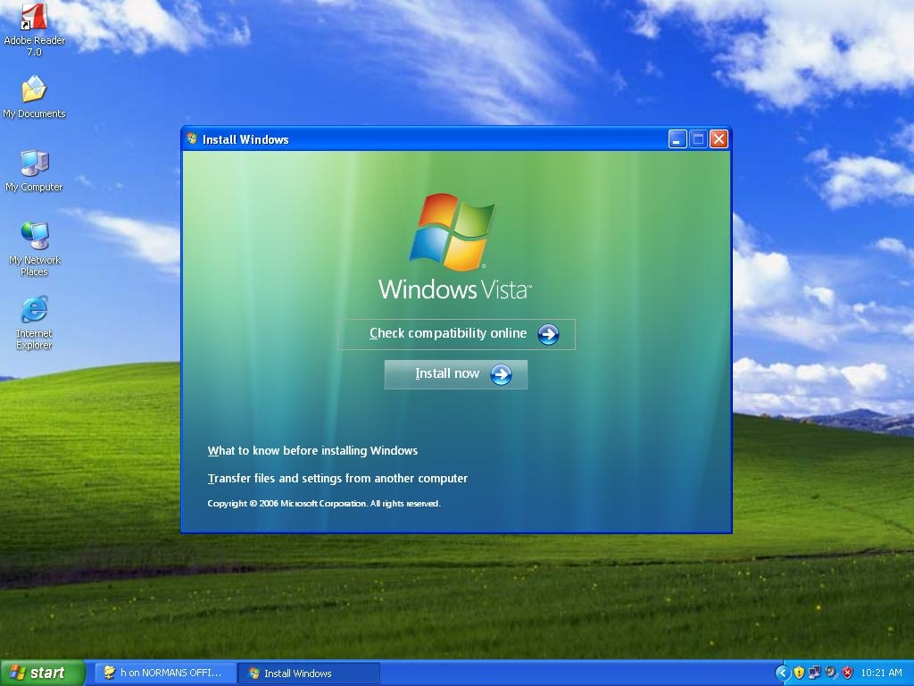
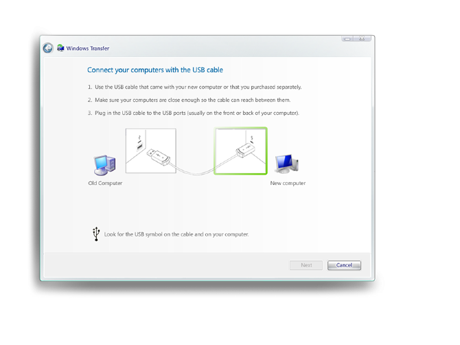

FIRST IMPRESSIONS MATTER
The Windows Out of Box Experience (OOBE) is the first thing every user sees when they start their new computer. At the time, this critical first impression was a pain point: setup took an average of 22 minutes and had a staggering 50% failure rate.
Working with hardware OEMs like Dell and HP added another layer of complexity—they often cluttered the desktop with icons, offers, and popup windows that degraded the user experience.
DRAMATIC IMPROVEMENT
Before
22 min
Average setup time
After
2:10
Average setup time
Before
50%
Failure rate
After
0%
Failure rate
SETUP FINAL DESIGN
The redesigned setup experience guided users through essential configuration steps with clear, friendly language and minimal cognitive load.



Early Iteration
Early design explorations helped us understand user needs and refine the experience before finalizing the design.

AUTOMATIC UPDATES
Keeping Windows secure required getting users to enable automatic updates. We designed a clear, non-threatening experience that helped users understand the value of staying current.

HARDWARE CONTROL PANELS
I worked on improving the control panel experience for hardware configuration, making it easier for users to manage their devices and peripherals.

DEVICE INSTALLATION
Greatly improved the device installation experience, making it easier for users to connect new hardware and get up and running quickly.

FILE TRANSFER
Designed the file and settings transfer experience to help users migrate to new computers without losing their important data.



FIRST DESKTOP EXPERIENCE
This screen prevented OEMs from polluting the desktop experience with lots of icons, offers, and popup windows. Instead, they could populate this window which gave them a larger surface with a preview pane.
This also helped the user experience because the window could be easily dismissed, giving users a clean desktop to start with.

IMPACT & RESULTS
- Reduced average setup time from 22 minutes to 2 minutes 10 seconds (90% reduction)
- Eliminated the 50% setup failure rate completely
- Partnered with Dell, HP and other OEMs to maintain clean user experiences
- Designed controlled OEM content surface that protected desktop experience
- Improved device installation wizard for better plug-and-play experience
- Created file transfer experience for seamless computer migration
- Shipped with millions of Windows installations worldwide
Related Patents
- Input Device for Scrolling in Multiple Directions (Tilt Wheel) #7,463,239
- Scrolling Apparatus Multi-directional Movement #7,193,612
- Scroll Wheel Assembly for Manipulating Images #7,042,441
- Destination Shortcuts #20040239637
What Colleagues Say
"Daan and I worked with product planning, engineering, and project management to define ground-breaking technology development for digital ink and paper. Daan was instrumental in leading the design effort, creating numerous concepts for user research that were of exemplary quality."
"Daan and his team quickly generated a collection of organizing themes and concepts which allowed us to make smart choices in Vista and Windows 7. People are still blown away when I show them the original concept work. I'd work with Daan again any time."